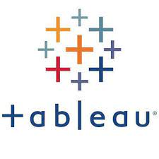

The dataset underwent thorough exploration, cleaning, and preprocessing to resolve inconsistencies. SQL queries aided in data manipulation and exploration, while Power BI was employed for visualization. Key insights spanned product distribution, category analysis, brand performance, formulation and ingredient trends,color etc. Correlation analysis revealed relationships between attributes, enriching interpretations on consumer preferences, market dynamics, and competitive strategies in the cosmetics sector.
VIEW PROJECT

The Analysis project involves an in-depth exploration and analysis of sales data obtained from the Amazon platform. Leveraging a dataset containing 3204 rows and 9 columns, the project aims to uncover valuable insights into sales trends, product performance, customer behavior, and geographical distribution. By utilizing SQL for data enrichment and Power BI for visualization, the project facilitates the extraction of actionable insights to inform strategic decision-making for optimizing sales strategies, enhancing customer engagement, and driving growth in the competitive e-commerce landscape.
VIEW PROJECT

In this project, I conducted a thorough analysis of movie data using Python. I started by downloading the dataset and importing necessary libraries. Next, I cleaned the data, addressing missing values and ensuring accuracy. Then, I explored correlations within the dataset, gaining insights into various aspects such as audience ratings, box office revenues, and genre preferences. This project demonstrates my proficiency in Python and data analysis techniques.
Demonstrated proficiency in data analysis and visualization using Python, Pandas, and Matplotlib through a comprehensive sales analysis project. Cleaned and explored 12 months of sales data from an electronics store, identifying top-selling products, peak sales months, and actionable insights for business strategies.
Automated cryptocurrency data retrieval via Python API, coupled with robust cleaning techniques for enhanced accuracy. Utilized visualization libraries for insightful presentations, showcasing trends and correlations. Demonstrates proficiency in data automation, cleaning, and visualization for informed decision-making.
Delve into the world of data analysis with my portfolio project on homicide data. From cleaning and visualizing the data to extracting valuable insights, this project showcases my proficiency in Python and data analysis techniques. Explore trends, patterns, and regional variations in homicide rates, highlighting the power of data-driven decision-making.

This portfolio project showcases my proficiency in web scraping using Python. Leveraging libraries such as pandas, requests, BeautifulSoup, and others, I demonstrated the ability to extract data from real websites and store it in a structured format, such as a CSV file. The project highlights my skills in data manipulation, HTTP requests handling, and ethical scraping practices. Through this project, I showcased my ability to automate data extraction tasks, ensuring efficiency and reliability. This project serves as a testament to my capabilities in utilizing Python for web scraping and data manipulation tasks.

Data Exploration of Covid 19 Dataset in SQL server , This was then visualised in Tableau.

This are my Tableu visualization projects(Dashboards) That I undertook.
This data was obtained from crash website, it was then cleaned ,manipulated then visualized.